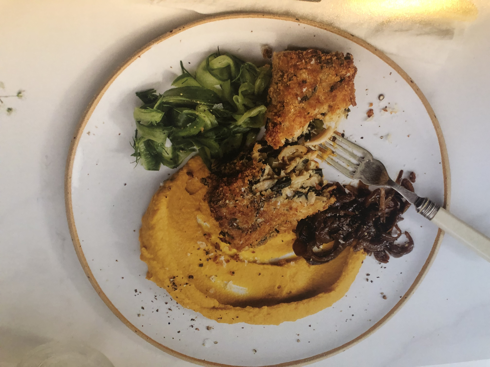
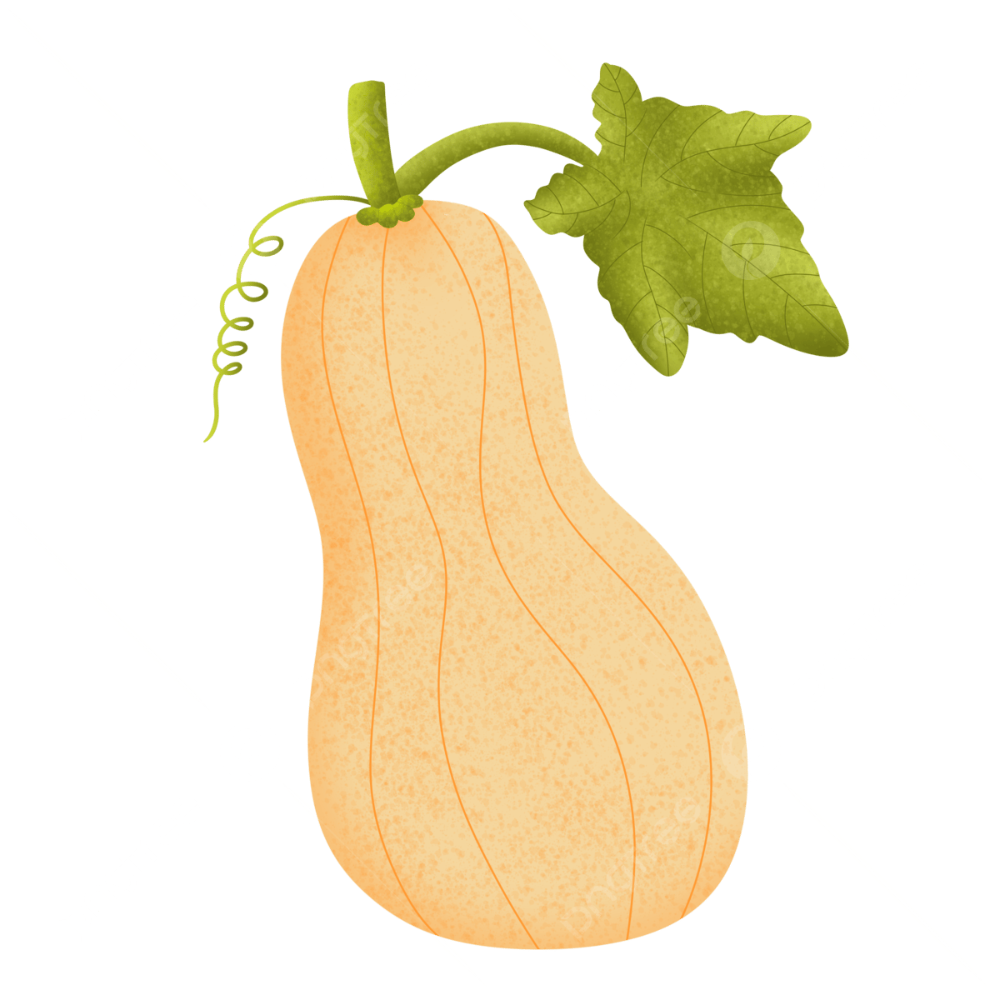

Panko Crusted Jackfruit
Serves 6 — 120 minutes
Recipe taken from Cornucopia The Green Cookbook!
Noted Footnote:
Made this for my 25th birthday! First recipe out of this book and pleasantly surprised by the complexity of this flavor :)
(and made for a nice workday picnic lunch the next day)
- jackfruit2x400-500g tins
 tofu100 g, firm, crumbled
tofu100 g, firm, crumbled tamari100 ml, can replace with soy sauce
tamari100 ml, can replace with soy sauce- rice vinegar3 tablespoons
- dijon mustard1 tablespoon
 toasted sesame oil2 teaspoons
toasted sesame oil2 teaspoons- wakame20 grams dried, soaked in 120ml water for 30 mins
- kelp powder2 teaspoons
 shichimi togarashi1 teaspoon
shichimi togarashi1 teaspoon panko40 g, extra for coating
panko40 g, extra for coating cornflour1 tablespoon
cornflour1 tablespoon rapeseed oilcan replace with other oil
rapeseed oilcan replace with other oil
Main Ingredients
- butternut squash2, peeled and cubed
- creamed coconut100 g, soaked in 400ml of hot water
- toasted sesame oil1 teaspoon
- saltdash or sprinkle
- rapeseed oilcan be replaced with other oil like avocado
Squash Puree
- caramelised onionsserve hot
- chilled pickled cucumbershomemade
Serve With
Advanced Preparation
- Consider pre-preparing the squash and onions the day before (the cucumber pickle is best prepared that day). Soak the dried wakame for 30 minutes before using.
Method
- Preheat the Oven to 190 degrees Celsius (374 degrees Fahrenheit).
- To make the squash puree, coat the cubes in a little rapeseed oil,spread out on the parchment-lined tray and bake in the oven for about 20 minutes until tender. Puree the cooked squash with the melted coconut, water and sesame oil until smooth (in batches, if using a high-speed blender) and set aside.
- Prepare the pickled cucumber and caramelised onions according to the toppings recipes pages for each item.
- To make the jackfruit fillets, rinse the jackfruit and break up the flesh with your fingers. Remove the pointed tips and chop finely. Briefly pulse the shredded flesh and chopped tips in a food processor (you'll need to do this in batches), then put in a large mixing bowl with all other ingredients except the panko and cornflour. Mix well to combine, check the seasoning and then fold in the panko crumbs and cornflour.
- Pour a little extra panko onto a dinner plate. Using clean hands, press a sixth of the jackfruit mixture into a barrel shape and roll this in the panko to coat the sides, top and bottom. Flatten the barrel slightly into a rectangular fillet and place it on a second clean plate. Repeat with the remaining mixture, adding more crumbs as needed. Refrigerate for at least 20 minutes to firm up.
- To pan-fry the fillets, heat about 1cm rapeseed oil in a pan. When it shimmers, add three jackfruit fillets and cook for three to four minutes on a medium-high heat, then flip and repeat on the other side. Drain on kitchen paper as you cook the second three fillets. (Alternatively, for a lower-fat version, transfer the jackfruit fillets onto a parchment-lined tray and bake in a preheated oven at 190 degrees Celsius (374 degrees Fahrenheit) for around 30 minutes.
- Reheat the squash puree and caramelised onions. Place a dollop of puree in the centre of each dinner plate, top with a small mound of onions, followed by a jackfruit fillet and finish with some chilled pickled cucumber.